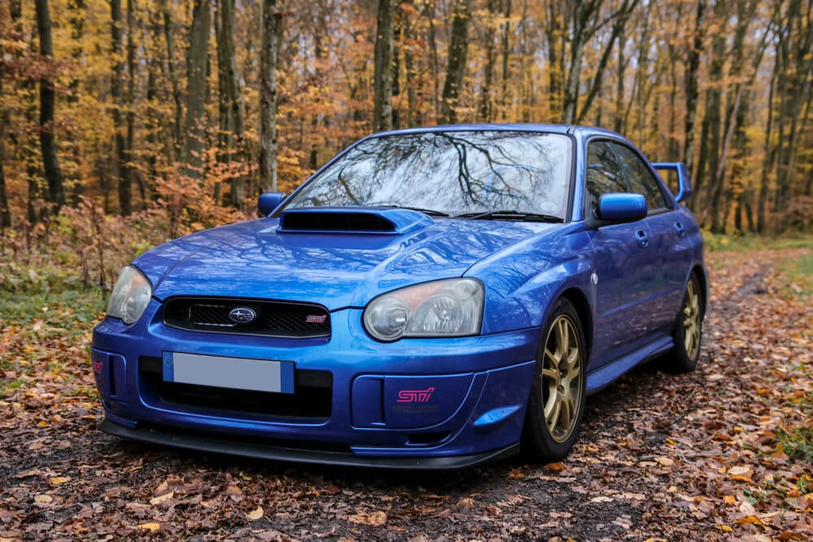

Subaru Impreza ( იაპონური :スバル・インプレッサ, ჰეპბერნი : Subaru Inpuressa ) არის კომპაქტური მანქანა , რომელიც იწარმოება იაპონური ავტომწარმოებელი Subaru-ს მიერ 1992 წლიდან. იგი დაინერგა, როგორც ჩანაცვლება Leone- ის სერიით . ახალი EJ სერია . ის ახლა მეექვსე თაობაშია. სუბარუ 2008 წლიდან გვთავაზობდა 5-კარიანი ჰეჩბეკის ძარის ვარიანტს. ფირმამ ასევე შესთავაზა კუპე 1995 წლიდან 2001 წლამდე, 4-კარიანი სედანი მეხუთე თაობამდე და 5-კარიანი უნივერსალი Impreza-ს წარდგენიდან, რომელიც შეიცვალა ჰეჩბეკი მესამე თაობით 2008 წელს. მეინსტრიმ ვერსიებმა მიიღეს "ბოქსერის" ბრტყელი ოთხი ძრავა 1.5-დან 2.5 ლიტრამდე, შესრულებაზე ორიენტირებული Impreza WRX და WRX STI მოდელები განახლებული ტურბო დამტენების დამატებით . მესამე თაობის სერიიდან მოყოლებული, ზოგიერთმა ბაზარმა მიიღო შემოკლებული Subaru WRX სახელი ამ მაღალი ხარისხის ვარიანტებისთვის. Impreza-ს პირველი სამი თაობა ასევე ხელმისაწვდომი იყო უგზოობის გარეშე SUV-ის პაკეტით, სახელწოდებით Outback Sport , ექსკლუზიური ჩრდილოეთ ამერიკის ბაზარზე. მეოთხე თაობისთვის, ეს გარეგნული პაკეტი გაიზარდა, როგორც სუბკომპაქტური კროსოვერი SUV და დაარქვეს XV ( Crostrek ჩრდილოეთ ამერიკაში) და გაიყიდება საერთაშორისო დონეზე. სასაუბროდ მანქანას ზოგჯერ სკუბისაც უწოდებენ. [ 1 ] Subaru-მ შესთავაზა Impreza-ს წინა და სრულამძრავიანი განლაგება. 1990-იანი წლების ბოლოდან ზოგიერთმა ბაზარმა შეზღუდა გაყიდვები სრულამძრავიანი მოდელით, რაც Impreza-ს უნიკალურ გაყიდვაში აყენებს გლობალურ კომპაქტურ კლასში, რომელიც ჩვეულებრივ ხასიათდება წინა წამყვანით. იაპონური მოდელები ხელმისაწვდომია ორივე კონფიგურაციაში. 2019 წლის iSeeCars-ის კვლევამ Impreza დაასახელა შეერთებულ შტატებში ხუთი წლის შემდეგ ყველაზე დაბალ გაუფასურებულ სედანად. [ 2 ]
